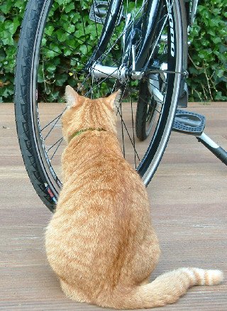

Visiting the bike store to have your squeaky bike checked can be frustrating and expensive.

A bike usually squeaks because the moving part are not lubricated enough. However, you may be surprised to hear that parts which are screwed together firmly can also squeak.